trigonometry
• Trigonometry is also referred to as 'trig' for short.
right angle triangles
main equations
$$\theta = \text{angle}$$
$$\sin\theta = \frac{\text{(O) Opposite}}{\text{(H) Hypotenuse}}$$
$$\cos\theta = \frac{\text{(A) Adjacent}}{\text{(H) Hypotenuse}}$$
$$\tan\theta = \frac{\text{(O) Opposite}}{\text{(A) Adjacent}}$$
All other equations in trigonometry are just these equations rearranged.
You can also use "SOH CAH TOA" to remember these:
S = sin
O = opposite
H = hypotenuse
C = cos
A = adjacent
H = hypotenuse
T = tan
O = opposite
A = adjacent
Hypotenuse, Adjacent and Opposite
These are the rules to find each value in a right-angle triangle.
The (θ) theta angle determines what is opposite and adjacent.
• The (H) Hypotenuse is always opposite the 90° angle.
• The (A) Adjacent is the angle between (θ) and the right angle.
• The (O) Opposite is opposite to the (θ) angle.
Example 1:
$$\sin\theta = \frac{O}{H}$$
$$\cos\theta = \frac{A}{H}$$
$$\tan\theta = \frac{O}{A}$$
Example 2:
$$\sin\theta = \frac{O}{H}$$
$$\cos\theta = \frac{A}{H}$$
$$\tan\theta = \frac{O}{A}$$
Missing Bottom Fraction
$$\tan45 = \frac{3}{x}$$
$$\frac{1}{\tan45} = \frac{x}{3}$$
$$\frac{3}{\tan45} = x$$
[Use Calculator]
Missing Top Fraction
$$\cos45 = \frac{x}{2}$$
$$2 \cos45 = x$$
$$x = 2 \cos45$$
[Use Calculator]
Missing [θ] Theta
$$\sin\theta = \frac{1}{2}$$
$$\theta = \sin^{-1}(\frac{1}{2})$$
[Use Calculator]